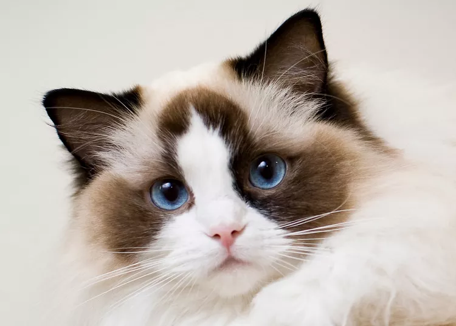

| Image | My Favorite Cat Breeds | Description | |

|
Himalayan | Himalayan cats are cats with soft, thick, and long furs and tails. They are nicknamed "Hemmies", which is a shortened form of their actual name. They are also a mix between the breeds Persian and Siamese, inheriting features from both breeds. | |
 |
Persian | Persian cats usually have more fur than breeds like Siamese or even Himalayan. They originally came from Persia/Iran, where they got their name from. They have that distinct feature, which is the thick fur around their mouth, that makes it easier to tell them apart from other breeds. | |
| Munchkin | Munchkin cats are best known for their small height, with stubbier legs than the usual cat has. Their fur is quite usually short or of medium length, and not being that thick or thin either. They also have short tails which match size. | ||
 |
Scottish Fold | Scottish fold cats are cats that usually have short, trimmed fur that aren't that thick, but (usually around the face) looks pefectly shaped around them. Those with long hair exist too, just not as common. They get their names from their folded ears. | |
|  | Ragdoll | Ragdoll cats have big (usually) blue eyes and a lot of fur on them. They're also large in size, and it is enhanced even more by their fur. They also look kind of similar to the Himalayan, despite not being in the same family as them, or even the Persian or the Siamese. | |
| Siamese | Siamese cats are usually taller and longer than cats like Ragdoll, Scottish Fold, etc. Their fur is shorter and gives them a more refined shape, which emphasizes the size they have. They are also known as "meezers", and would most likely have a pattern on their face, ears, arms, and tails. | ||
Links: